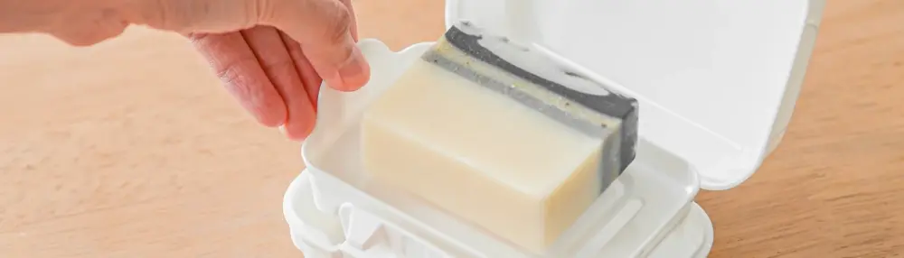

Solusi Praktis untuk Traveler: Wadah Sabun Batang Agar Tetap Kering dan Awet
Dipublikasikan pada 9 September 2025

Bagi Anda yang sering bepergian, khususnya para backpacker, pasti sudah tidak asing dengan tantangan yang ada, seperti kondisi toilet umum yang minim fasilitas. Seringkali, tidak tersedia sabun, sehingga kita harus mencari alternatif di tempat lain seperti minimarket atau kafe. Namun, jika sedang berada di daerah terpencil, kita mau tidak mau harus membawa perlengkapan sendiri, termasuk sabun.
Banyak orang lebih nyaman menggunakan sabun batang ketimbang sabun cair. Nah, tantangannya adalah bagaimana membawa sabun batang tanpa membuatnya lembek atau berantakan di dalam tas. Solusi praktisnya adalah menggunakan wadah sabun batang khusus untuk traveling.
Keistimewaan Wadah Sabun Batang untuk Traveling
Tim Mas Tukang mencoba salah satu wadah sabun batang yang terbuat dari plastik. Wadah ini ukurannya cukup besar untuk menampung berbagai bentuk sabun, dan dilengkapi tutup berpengunci yang sangat rapat. Ini memastikan sisa cairan sabun tidak bocor keluar, menjaga isi tas tetap bersih.
Bagian dalam wadah ini dilengkapi dengan tatakan berongga. Fungsi tatakan ini sangat cerdas: ia memisahkan sabun dari sisa air yang bisa membuatnya lembek. Dengan desain ini, sabun tetap kering di bagian bawah, menjadikannya lebih awet dan siap digunakan kapan saja.
Wadah ini tidak terlalu besar, sehingga sangat praktis untuk dibawa ke mana-mana. Bahkan, ukurannya pas untuk dimasukkan ke dalam bagasi motor. Alat sederhana namun fungsional ini bisa menjadi penyelamat, terutama saat Anda berada di lokasi dengan fasilitas seadanya.
Bentuk dan cara penggunaan wadah sabun batang untuk traveling dibahas pada video singkat di bawah ini. Semoga bermanfaat dan membuat perjalanan Anda semakin nyaman!